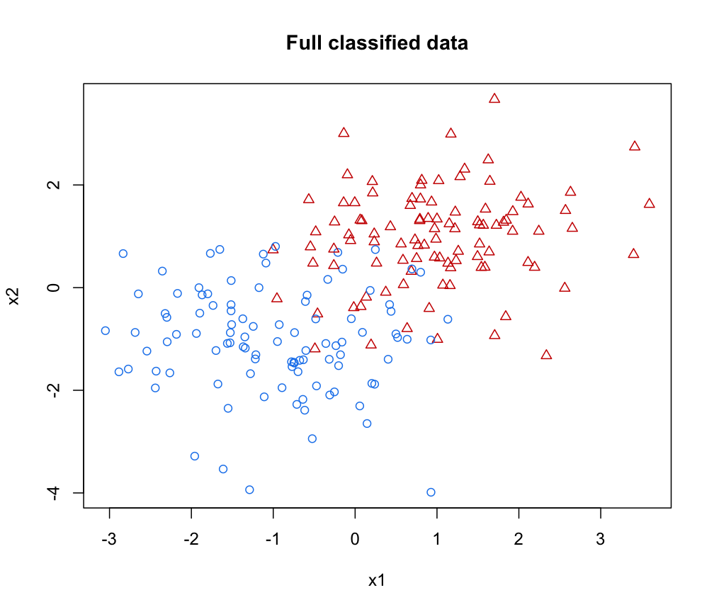
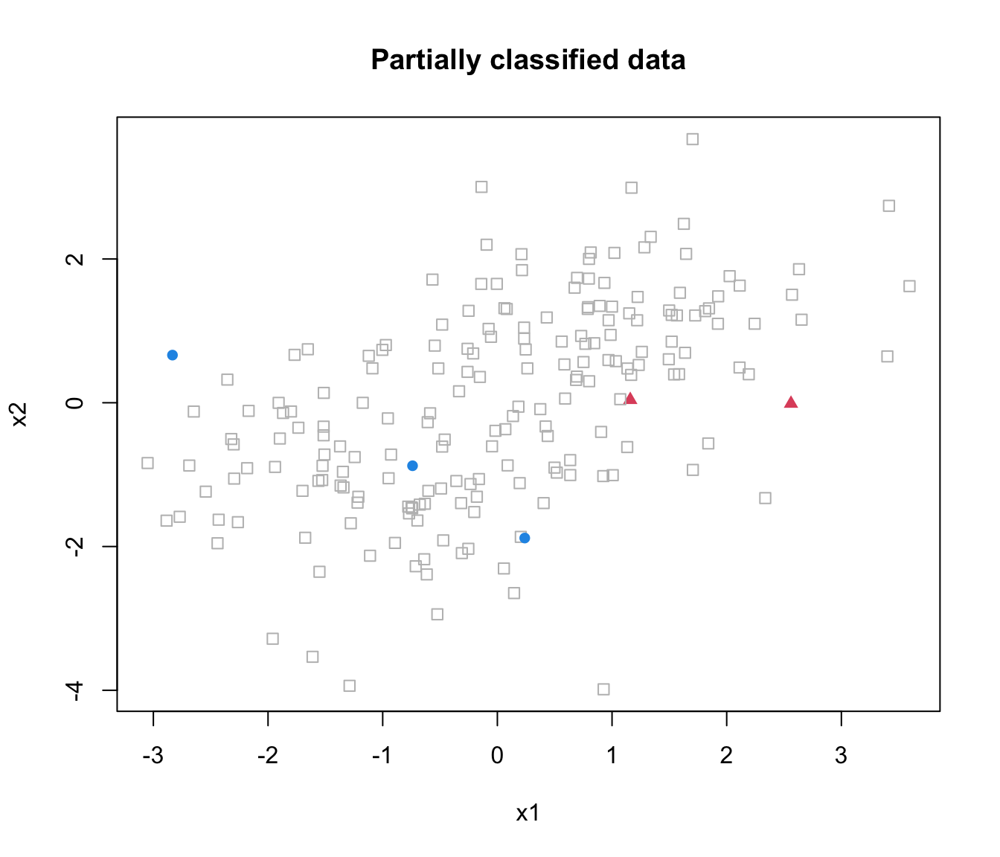
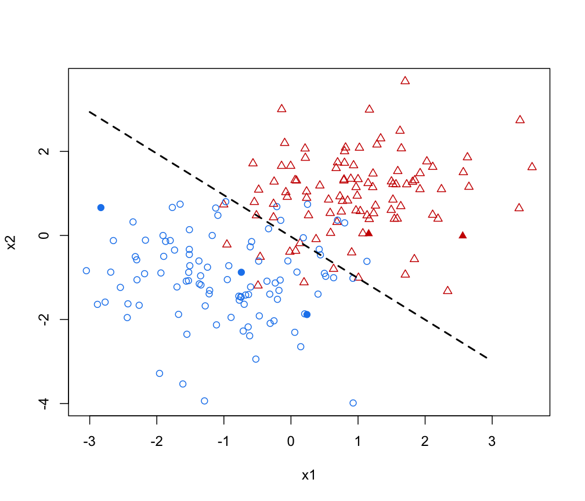

MclustSSC semi-supervised classification
MclustSSC.RdSemi-Supervised classification based on Gaussian finite mixture modeling.
Usage
MclustSSC(data, class,
G = NULL, modelNames = NULL,
prior = NULL, control = emControl(),
warn = mclust.options("warn"),
verbose = interactive(),
...)Arguments
- data
A data frame or matrix giving the training data.
- class
A vector giving the known class labels (either a numerical value or a character string) for the observations in the training data. Observations with unknown class are encoded as
NA.- G
An integer value specifying the numbers of mixture components or classes. By default is set equal to the number of known classes. See the examples below.
- modelNames
A vector of character strings indicating the models to be fitted by EM (see the description in
mclustModelNames). See the examples below.- prior
The default assumes no prior, but this argument allows specification of a conjugate prior on the means and variances through the function
priorControl.- control
A list of control parameters for EM. The defaults are set by the call
emControl().- warn
A logical value indicating whether or not certain warnings (usually related to singularity) should be issued when estimation fails. The default is controlled by
mclust.options.- verbose
A logical controlling if a text progress bar is displayed during the fitting procedure. By default is
TRUEif the session is interactive, andFALSEotherwise.- ...
Further arguments passed to or from other methods.
Value
An object of class 'MclustSSC' providing the optimal (according
to BIC) Gaussian mixture model for semi-supervised classification.
The details of the output components are as follows:
- call
The matched call.
- data
The input data matrix.
- class
The input class labels (including
NAs for unknown labels.- modelName
A character string specifying the "best" estimated model.
- G
A numerical value specifying the number of mixture components or classes of the "best" estimated model.
- n
The total number of observations in the data.
- d
The dimension of the data.
- BIC
All BIC values.
- loglik
Log-likelihood for the selected model.
- df
Number of estimated parameters.
- bic
Optimal BIC value.
- parameters
A list with the following components:
proA vector whose kth component is the mixing proportion for the kth component of the mixture model.
meanThe mean for each component. If there is more than one component, this is a matrix whose kth column is the mean of the kth component of the mixture model.
varianceA list of variance parameters for the model. The components of this list depend on the model specification. See the help file for
mclustVariancefor details.
- z
A matrix whose [i,k]th entry is the probability that observation i in the test data belongs to the kth class.
- classification
The classification corresponding to
z, i.e.map(z).- prior
The prior used (if any).
- control
A list of control parameters used in the EM algorithm.
Details
The semi-supervised approach implemented in MclustSSC() is a simple Gaussian mixture model for classification where at the first M-step only observations with known class labels are used for parameters estimation. Then, a standard EM algorithm is used for updating the probabiltiy of class membership for unlabelled data while keeping fixed the probabilities for labelled data.
References
Scrucca L., Fop M., Murphy T. B. and Raftery A. E. (2016) mclust 5: clustering, classification and density estimation using Gaussian finite mixture models, The R Journal, 8/1, pp. 289-317.
Examples
# Simulate two overlapping groups
n <- 200
pars <- list(pro = c(0.5, 0.5),
mean = matrix(c(-1,1), nrow = 2, ncol = 2, byrow = TRUE),
variance = mclustVariance("EII", d = 2, G = 2))
pars$variance$sigmasq <- 1
data <- sim("EII", parameters = pars, n = n, seed = 12)
class <- data[,1]
X <- data[,-1]
clPairs(X, class, symbols = c(1,2), main = "Full classified data")

# Randomly remove labels
cl <- class; cl[sample(1:n, size = 195)] <- NA
table(cl, useNA = "ifany")
#> cl
#> 1 2 <NA>
#> 3 2 195
clPairs(X, ifelse(is.na(cl), 0, class),
symbols = c(0, 16, 17), colors = c("grey", 4, 2),
main = "Partially classified data")

# Fit semi-supervised classification model
mod_SSC <- MclustSSC(X, cl)
summary(mod_SSC, parameters = TRUE)
#> ----------------------------------------------------------------
#> Gaussian finite mixture model for semi-supervised classification
#> ----------------------------------------------------------------
#>
#> log-likelihood n df BIC
#> -654.5776 200 6 -1340.945
#>
#> Classes n % Model G
#> 1 3 1.5 EII 1
#> 2 2 1.0 EII 1
#> <NA> 195 97.5
#>
#> Mixing probabilities:
#> 1 2
#> 0.5022706 0.4977294
#>
#> Means:
#> 1 2
#> x1 -1.002123 0.9946794
#> x2 -1.038680 0.9812348
#>
#> Variances:
#> 1
#> x1 x2
#> x1 0.912807 0.000000
#> x2 0.000000 0.912807
#> 2
#> x1 x2
#> x1 0.912807 0.000000
#> x2 0.000000 0.912807
#>
#> Classification summary:
#> Predicted
#> Class 1 2
#> 1 3 0
#> 2 0 2
#> <NA> 99 96
pred_SSC <- predict(mod_SSC)
table(Predicted = pred_SSC$classification, Actual = class)
#> Actual
#> Predicted 1 2
#> 1 91 10
#> 2 9 90
ngrid <- 50
xgrid <- seq(-3, 3, length.out = ngrid)
ygrid <- seq(-4, 4.5, length.out = ngrid)
xygrid <- expand.grid(xgrid, ygrid)
pred_SSC <- predict(mod_SSC, newdata = xygrid)
col <- mclust.options("classPlotColors")[class]
pch <- class
pch[!is.na(cl)] = ifelse(cl[!is.na(cl)] == 1, 19, 17)
plot(X, pch = pch, col = col)
contour(xgrid, ygrid, matrix(pred_SSC$z[,1], ngrid, ngrid),
add = TRUE, levels = 0.5, drawlabels = FALSE, lty = 2, lwd = 2)
